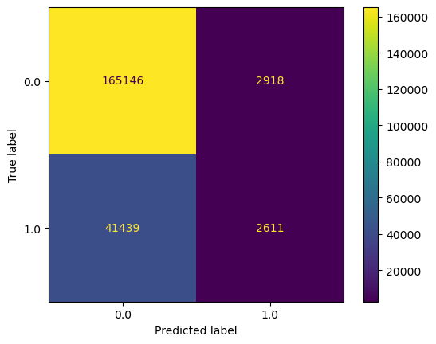

#
import pandas as pd
from sklearn.model_selection import train_test_split
from sklearn.linear_model import LogisticRegression
import sklearn
import numpy as npConfusion Matrix and Sentiment Analysis
Confusion Matrix and Sentiment Analysis
Lending Club Dataset
The following code processes the Lending Club Dataset from https://www.kaggle.com/datasets/mariiagusarova/preprocessed-lending-club-dataset-v2.
Run and comment the following instructions (fix them if needed). Inspect he dataframe?
#
loan = pd.read_csv('loans.csv', low_memory=True)Run and comment the following instructions (fix them if needed). What kind of modeling exercise is performed?
loan['loan_status'].value_counts()loan_status
0.0 672377
1.0 176077
Name: count, dtype: int64The objective here is to build a model to predict which loans will default (loan_status=1). It is a classification exercise. Since the number of regressors is fairly large it is natural to look for a machine learning approcah.
#
features = loan.columns.to_list()
features.remove('loan_status')#
df_train, df_test = train_test_split(loan, test_size=0.25, random_state=42)/home/pablo/.local/opt/micromamba/envs/escp/lib/python3.12/site-packages/sklearn/linear_model/_logistic.py:469: ConvergenceWarning: lbfgs failed to converge (status=1):
STOP: TOTAL NO. of ITERATIONS REACHED LIMIT.
Increase the number of iterations (max_iter) or scale the data as shown in:
https://scikit-learn.org/stable/modules/preprocessing.html
Please also refer to the documentation for alternative solver options:
https://scikit-learn.org/stable/modules/linear_model.html#logistic-regression
n_iter_i = _check_optimize_result(LogisticRegression()In a Jupyter environment, please rerun this cell to show the HTML representation or trust the notebook.
On GitHub, the HTML representation is unable to render, please try loading this page with nbviewer.org.
LogisticRegression()
#
clf = LogisticRegression()
clf.fit(df_train[features], df_train['loan_status'])#
y_pred = clf.predict(df_test[features])
print('Accuracy of logistic regression classifier on test set: {:.2f}'.format(logreg.score(df_test[features], df_test['loan_status'])))Accuracy of logistic regression classifier on test set: 0.79#
cal = sklearn.metrics.confusion_matrix(df_test['loan_status'], y_pred, labels=clf.classes_)
print(cal)[[165146 2918]
[ 41439 2611]]#
from sklearn.metrics import ConfusionMatrixDisplay
disp = ConfusionMatrixDisplay(confusion_matrix=cal, display_labels=clf.classes_)
disp.plot()
For the confusion matrix that was just computed compute accuracy, precision, recall and f1 score (lookup the definitions if needed).
# compute the different statistics (by hand or programmatically)Comment on the model validity.
The Dataset
We use the News Sentiment Dataset from Kaggle.
- Import Dataset as a pandas dataframe. Remove rows where
selected_textis not available.
# the following command checks the current working directory
# it should end with session_8
%pwd'/home/pablo/Teaching/escp/dbe/tutorials/session_8'import pandas
df = pandas.read_csv("Tweets.csv")Describe Dataset (text and graphs). What is the distribution of the various sentiment values?
Count the number of tweets mentionng
trump.Split Dataset into training, and test set.
Classifying tweets
The goal is now to to build a tweet classifier to predict a tweet sentiment, without any human input.
- Extract features from the training dataset. What do you do with non-words / punctuation?
(hint: check the CountVectorizer function and the tutorial on sklearn webpage.)
Convert occurrencies to frequencies. Make another version with tf-idf.
Choose a classifier to predict the sentiment on the validation set. Compute the confusion matrix.